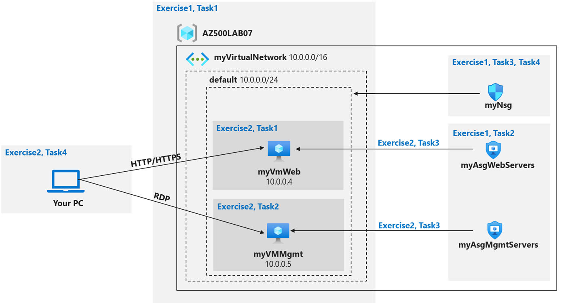

Lab 07: Network Security Groups and Application Security Groups
Student lab manual
Lab scenario
You have been asked to implement your organization’s virtual networking infrastructure and test to ensure it is working correctly. In particular:
- The organization has two groups of servers: Web Servers and Management Servers.
- Each group of servers should be in its own Application Security Group.
- You should be able to RDP into the Management Servers, but not the Web Servers.
- The Web Servers should display the IIS web page when accessed from the internet.
- Network security group rules should be used to control network access.
For all the resources in this lab, we are using the East US region. Verify with your instructor this is the region to use for class.
Lab objectives
In this lab, you will complete the following exercises:
- Exercise 1: Create the virtual networking infrastructure
- Exercise 2: Deploy virtual machines and test the network filters
Network and Application Security Groups diagram

Instructions
Exercise 1: Create the virtual networking infrastructure
Estimated timing: 20 minutes
For all the resources in this lab, we are using the East (US) region. Verify with your instructor this is region to use for you class.
In this exercise, you will complete the following tasks:
- Task 1: Create a virtual network with one subnet.
- Task 2: Create two application security groups.
- Task 3: Create a network security group and associate it with the virtual network subnet.
- Task 4: Create inbound NSG security rules to all traffic to web servers and RDP to the management servers.
Task 1: Create a virtual network
In this task, you will create a virtual network to use with the network and application security groups.
-
Sign-in to the Azure portal
https://portal.azure.com/.Note: Sign in to the Azure portal using an account that has the Owner or Contributor role in the Azure subscription you are using for this lab.
-
In the Azure portal, in the Search resources, services, and docs text box at the top of the Azure portal page, type Virtual networks and press the Enter key.
-
On the Virtual networks blade, click + Create.
-
On the Basics tab of the Create virtual network blade, specify the following settings (leave others with their default values) and click Next: IP Addresses:
Setting Value Subscription the name of the Azure subscription you are using in this lab Resource group click Create new and type the name AZ500LAB07 Name myVirtualNetwork Region East US -
On the IP addresses tab of the Create virtual network blade, set the IPv4 address space to 10.0.0.0/16, and, if needed, in the Subnet name column, click default, on the Edit subnet blade, specify the following settings and click Save:
Setting Value Subnet name default Subnet address range 10.0.0.0/24 -
Back on the IP addresses tab of the Create virtual network blade, click Review + create.
-
On the Review + create tab of the Create virtual network blade, click Create.
Task 2: Create application security groups
In this task, you will create an application security group.
-
In the Azure portal, in the Search resources, services, and docs text box at the top of the Azure portal page, type Application security groups and press the Enter key.
-
On the Application security groups blade, click + Create.
-
On the Basics tab of the Create an application security group blade, specify the following settings:
Setting Value Resource group AZ500LAB07 Name myAsgWebServers Region East US Note: This group will be for the web servers.
-
Click Review + create and then click Create.
-
Navigate back to the Application security groups blade and click + Create.
-
On the Basics tab of the Create an application security group blade, specify the following settings:
Setting Value Resource group AZ500LAB07 Name myAsgMgmtServers Region East US Note: This group will be for the management servers.
-
Click Review + create and then click Create.
Task 3: Create a network security group and associate the NSG to the subnet
In this task, you will create a network security group.
-
In the Azure portal, in the Search resources, services, and docs text box at the top of the Azure portal page, type Network security groups and press the Enter key.
-
On the Network security groups blade, click + Create.
-
On the Basics tab of the Create network security group blade, specify the following settings:
Setting Value Subscription the name of the Azure subscription you are using in this lab Resource group AZ500LAB07 Name myNsg Region East US -
Click Review + create and then click Create.
-
In the Azure portal, navigate back to the Network security groups blade and click the myNsg entry.
-
On the myNsg blade, in the Settings section, click Subnets and then click + Associate.
-
On the Associate subnet blade, specify the following settings and click OK:
Setting Value Virtual network myVirtualNetwork Subnet default
Task 4: Create inbound NSG security rules to all traffic to web servers and RDP to the servers.
-
On the myNsg blade, in the Settings section, click Inbound security rules.
-
Review the default inbound security rules and then click + Add.
-
On the Add inbound security rule blade, specify the following settings to allow TCP ports 80 and 443 to the myAsgWebServers application security group (leave all other values with their default values):
Setting Value Destination in the drop-down list, select Application security group and then click myAsgWebServers Destination port ranges 80,443 Protocol TCP Priority 100 Name Allow-Web-All -
On the Add inbound security rule blade, click Add to create the new inbound rule.
-
On the myNsg blade, in the Settings section, click Inbound security rules, and then click + Add.
-
On the Add inbound security rule blade, specify the following settings to allow the RDP port (TCP 3389) to the myAsgMgmtServers application security group (leave all other values with their default values):
Setting Value Destination in the drop-down list, select Application security group and then click myAsgMgmtServers Destination port ranges 3389 Protocol TCP Priority 110 Name Allow-RDP-All -
On the Add inbound security rule blade, click Add to create the new inbound rule.
Result: You have deployed a virtual network, network security with inbound security rules, and two application security groups.
Exercise 2: Deploy virtual machines and test network filters
Estimated timing: 25 minutes
In this exercise, you will complete the following tasks:
- Task 1: Create a virtual machine to use as a web server.
- Task 2: Create a virtual machine to use as a management server.
- Task 3: Associate each virtual machines network interface to it’s application security group.
- Task 4: Test the network traffic filtering.
Task 1: Create a virtual machine to use as a web server.
In this task, you will create a virtual machine to use as a web server.
-
In the Azure portal, in the Search resources, services, and docs text box at the top of the Azure portal page, type Virtual machines and press the Enter key.
-
On the Virtual machines blade, click + Create and, in the dropdown list, click + Azure virtual machine.
-
On the Basics tab of the Create a virtual machine blade, specify the following settings (leave others with their default values):
Setting Value Subscription the name of the Azure subscription you will be using in this lab Resource group AZ500LAB07 Virtual machine name myVmWeb Region (US)East US Image Windows Server 2022 Datacenter: Azure Edition- x64 Gen2 Size Standard D2s v3 Username Student Password Please use your personal password created in Lab 04 > Exercise 1 > Task 1 > Step 9. Confirm password Retype your password Public inbound ports None Would you like to use an existing Windows Server License No Note: For public inbound ports, we will rely on the precreated NSG.
-
Click Next: Disks > and, on the Disks tab of the Create a virtual machine blade, set the OS disk type to Standard HDD and click Next: Networking >.
-
On the Networking tab of the Create a virtual machine blade, select the previously created network myVirtualNetwork.
-
Under NIC network security group select None.
-
Click Next: Management >, then click Next: Monitoring >. On the Monitoring tab of the Create a virtual machine blade, verify the following setting:
Setting Value Boot diagnostics Enabled with managed storage account (recommended) -
Click Review + create, on the Review + create blade, ensure that validation was successful and click Create.
Task 2: Create a virtual machine to use as a management server.
In this task, you will create a virtual machine to use as a management server.
-
In the Azure portal, navigate back to the Virtual machines blade, click + Create, and, in the dropdown list, click + Azure virtual machine.
-
On the Basics tab of the Create a virtual machine blade, specify the following settings (leave others with their default values):
Setting Value Subscription the name of the Azure subscription you will be using in this lab Resource group AZ500LAB07 Virtual machine name myVMMgmt Region (US)East US Image Windows Server 2022 Datacenter: Azure Edition - x64 Gen2 Size Standard D2s v3 Username Student Password Please use your personal password created in Lab 04 > Exercise 1 > Task 1 > Step 9. Public inbound ports None Already have a Windows Server license No Note: For public inbound ports, we will rely on the precreated NSG.
-
Click Next: Disks > and, on the Disks tab of the Create a virtual machine blade, set the OS disk type to Standard HDD and click Next: Networking >.
-
On the Networking tab of the Create a virtual machine blade, select the previously created network myVirtualNetwork.
-
Under NIC network security group select None.
-
Click Next: Management >, then click Next: Monitoring >. On the Monitoring tab of the Create a virtual machine blade, verify the following setting:
Setting Value Boot diagnostics Enabled with managed storage account (recommended) -
Click Review + create, on the Review + create blade, ensure that validation was successful and click Create.
Note: Wait for both virtual machines to be provisioned before continuing.
Task 3: Associate each virtual machines network interface to its application security group.
In this task, you will associate each virtual machines network interface with the corresponding application security group. The myVMWeb virtual machine interface will be associated to the myAsgWebServers ASG. The myVMMgmt virtual machine interface will be associated to the myAsgMgmtServers ASG.
-
In the Azure portal, navigate back to the Virtual machines blade and verify that both virtual machines are listed with the Running status.
-
In the list of virtual machines, click the myVMWeb entry.
-
On the myVMWeb blade, in the Settings section, click Networking and then, on the myVMWeb | Networking blade, click the Application security groups tab.
-
Click Configure the application security groups, in the Application security group drop-down list, select myAsgWebServers, and then click Save.
-
Navigate back to the Virtual machines blade and in the list of virtual machines, click the myVMMgmt entry.
-
On the myVMMgmt blade, in the Settings section, click Networking and then, on the myVMMgmt | Networking blade, click the Application security groups tab.
-
Click Configure the application security groups, in the Application security group drop-down list, select myAsgMgmtServers, and then click Save.
Task 4: Test the network traffic filtering
In this task, you will test the network traffic filters. You should be able to RDP into the myVMMgmnt virtual machine. You should be able to connect from the internet to the myVMWeb virtual machine and view the default IIS web page.
-
Navigate back to the myVMMgmt virtual machine blade.
-
On the myVMMgmt blade, click Connect and, in the drop down menu, click RDP.
-
Click Download RDP File and use it to connect to the myVMMgmt Azure VM via Remote Desktop. When prompted to authenticate, provide the following credntials:
Setting Value User name Student Password Please use your personal password created in Lab 04 > Exercise 1 > Task 1 > Step 9. Note: Verify that the Remote Desktop connection was successful. At this point you have confirmed you can connect via Remote Desktop to myVMMgmt.
-
In the Azure portal, navigate to the myVMWeb virtual machine blade.
-
On the myVMWeb blade, in the Operations section, click Run command and then click RunPowerShellScript.
-
On the Run Command Script pane, run the following to install the Web server role on myVmWeb:
Install-WindowsFeature -name Web-Server -IncludeManagementToolsNote: Wait for the installation to complete. This might take a couple of minutes. At that point, you can verify that myVMWeb can be accessed via HTTP/HTTPS.
-
In the Azure portal, navigate back to the myVMWeb blade.
-
On the myVMWeb blade, identify the Public IP address of the myVmWeb Azure VM.
-
Open another browser tab and navigate to IP address you identified in the previous step.
Note: The browser page should display the default IIS welcome page because port 80 is allowed inbound from the internet based on the setting of the myAsgWebServers application security group. The network interface of the myVMWeb Azure VM is associated with that application security group.
Result: You have validated that the NSG and ASG configuration is working and traffic is being correctly managed.
Clean up resources
Remember to remove any newly created Azure resources that you no longer use. Removing unused resources ensures you will not incur unexpected costs.
-
Open the Cloud Shell by clicking the first icon in the top right of the Azure Portal. If prompted, select PowerShell and Create storage.
-
Ensure PowerShell is selected in the drop-down menu in the upper-left corner of the Cloud Shell pane.
-
In the PowerShell session within the Cloud Shell pane, run the following to remove the resource group you created in this lab:
Remove-AzResourceGroup -Name "AZ500LAB07" -Force -AsJob -
Close the Cloud Shell pane.